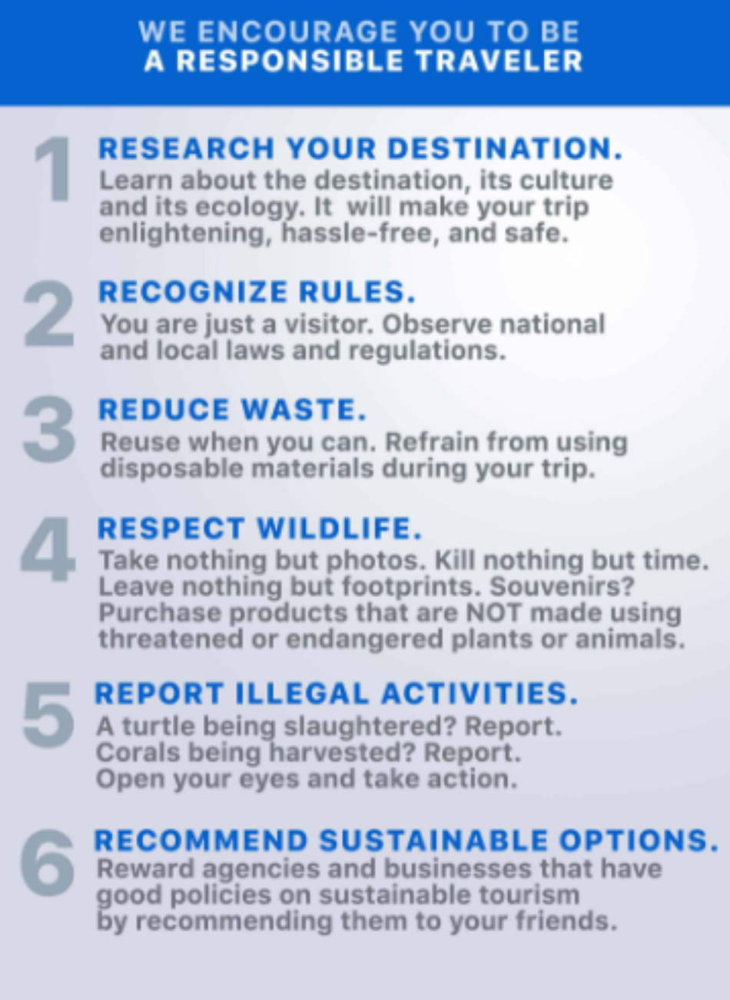

A 3D2N Batangas Itinerary for a Barkada Road Trip!
Only about two hours away from Manila, this friendly province in the south is well known for its beautiful beaches and stunning sunsets. Not to be missed also are the heritage tours, thrilling water activities, and delicious food trips.
To help you with your road/beach trip for three, here’s a sample 3D2N Batangas itinerary:
Day One
- Start your trip with Goto or Lomi in Lipa City (P150) - Because why not? Batangas is known for these two dishes. You can easily find a local store or carinderia along the road that sells these appetizing must-eats. We highly suggest you visit Lomi King to finish a bowl of these meals.
- Enjoy historic tours around Lipa City (Free) - There are a lot of Insta-worthy sites in Lipa City that you and your buddies can explore. Check out Lipa Cathedral, Carmel Church, and Casa de Segunda.
- Try exciting activities in Laiya (P670) - Popular for its beaches, Laiya offers travelers a heap of water sports. Laiya Adventure Park is the place to be if you want to try riding a giant swing, rappelling, wall climbing, and more.
- Fill your tummy with seafood treats at Choi Garden (P300) - This restaurant in San Juan has pleasing Chinese decorations to make your dining experience more enjoyable. Must-tries include seafood fried noodles, Chinese soup, and dimsum.
Estimated Total: P1,120
Day Two
- Play games for bonding sessions (Free) - After eating breakfast, the best way to start the day’s activities is to play a round of exciting games with the entire barkada. You can either do it in any of the rooms or by the beach. Have someone in your group plan and organize the games before the getaway itself.
- Taste bulalo at OMG! Olvida & Myra’s Grill (P370) - Aside from Goto and Lomi, Bulalo Batangas version is something that you should not miss during the vacation. A bowl of this will make you go aahhhh. While at the restaurant, you can also order grilled favorites.
- Watch the sunset in Anilao (Free) - Thank the heavens for a pretty day that will be more beautiful if you cap it off by watching a glorious sunset.
Estimated Total: P370
Day Three
- Make the most out of your beach trip - Mabini is home to beaches that are too breathtaking you won’t mind soaking under the sun for hours. Bring bottles of water to stay hydrated.
- Satisfy your tummy at Frido’s (P300) -Please your stomach, not just your eyes, while you and your friends are on a Batangas getaway! At Frido’s, you can order Stuffed Squid, Barbecue Ribs, and Chili Pepper Lumpia, among others.
- Buy pasalubong for your family back home (P200) - Going back to Manila from Mabini, you’ll pass by various pasalubong stalls along the road. You can choose from a long list of Batangas pasalubongs, including fresh honey, honey cider vinegar, bagoong balayan, and sumang magkayakap. Your P200 can go a long way.
Estimated Total: P500